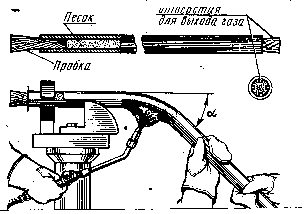
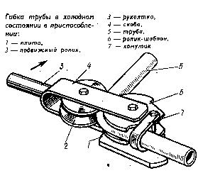
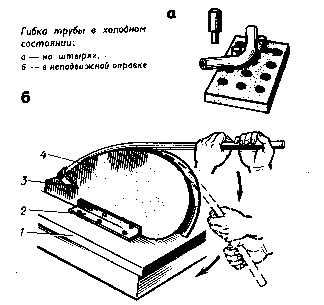

ГИБКА МЕТАЛЛА. ГИБКА ТРУБ
Гнутые трубы широко применяют для изготовления бензиновых, масляных, воздушных трубопроводов в автомобилях, тракторах, самолётах, металлорежущих станках и других машинах.
Трубы гнутые
Ручным способом
В холодном состоянии
С наполнителем
Без наполнителя
В горячем состоянии
Механизированным способом
ГИБКА ТРУБ В ГОРЯЧЕМ СОСТОЯНИИ
применяется при диаметре более 100 мм
1. Трубы отжигают.
2. Размечают.
3. Один конец закрывают деревянной или металлической пробкой.
4. Трубы наполняют мелким сухим песком через воронку, уплотняют песок, обстукивая трубу молотком.
5. После заполнения песком второй конец трубы забивают деревянной пробкой с отверстием для выхода газов образующихся при нагреве.
6. При гибке труб радиус гибки должен быть не менее трех диаметров трубы.

7. Если трубу изгибают под углом 90, то нагревают участок равный 6 диаметрам трубы.
Если под углом 60 – 4 диаметрам трубы;
Если под углом 45 – 3 диаметрам трубы.
8. Трубу нагревают паяльными лампами в горнах или пламенем газовых горелок до вишнево – красного цвета.
9. Изгибают трубу по шаблону.
10. Выколачивают или выжигают пробки и высыпают песок.
11. Изгиб проверяют шаблоном.
ГИБКА ТРУБ В ХОЛОДНОМ СОСТОЯНИИ
выполняется с помощью различных приспособлений:
1. Плита с отверстиями, в которой в соответствующих местах устанавливаются штыри служащие упорами при гибке.
2. Трубы небольших диаметров с большим радиусом кривизны гнут применяя простые ручные приспособления с неподвижной оправкой.
3. Трубы диаметром до 20 мм изгибают в специальном приспособлении.
ГИБКА МЕЛКИХ И ЛАТУННЫХ ТРУБ
Трубы заполняют расплавленной канифолью, расплавленным стеарином парафином или свинцом в расплавленном состоянии.

